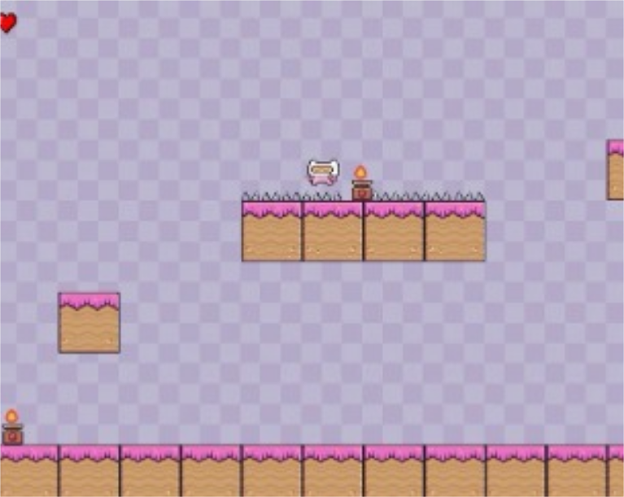

Project Zomboid é um dos meus hobbies favoritos. É um jogo que, mesmo sendo pouco conhecido, me prende bastante pela sua complexidade e realismo. Gosto do desafio de sobreviver, gerenciar recursos e planejar cada passo, é um jogo que exige estratégia e atenção aos detalhes, o que o torna ainda mais interessante pra mim. entrar no jogo, explorar o mapa, organizar suprimentos e montar uma base me ajuda a desligar um pouco da rotina. É aquele tipo de jogo em que o tempo passa rápido, e mesmo nas situações mais caóticas, acabo encontrando uma forma de aliviar o estresse e me distrair.
Manoel Gomes é parte de um dos meus hobbies mais inusitados. Apesar de ter começado como uma brincadeira, escutar suas músicas se tornou algo que realmente gosto de fazer. No início, era apenas um meme divertido, mas com o tempo passei a apreciar de verdade seus sucessos, como o famoso "Caneta Azul" e outros hits. Hoje em dia, é comum me pegarem cantando trechos como "Cêça, meu amor..." no dia a dia. Além disso, tive a alegria de ter publicações que fiz sobre o cantor curtidas pela página oficial do Manoel Gomes no Instagram, o que tornou essa conexão ainda mais especial.
